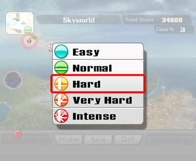

VIM
Modos
- Modo normal
- Modo de inserção
- Modo de comando
- Modo visual
- Modo ex
- Modo de pesquisa
... e os menos conhecidos...
- Modo de esperando pesquisa
- Modo de espera de comando
Modo normal

O modo normal é o modo que o VIM inicia.
Nele é possível movimentar o cursor, copiar e colar, entrar em modo de inserção, entrar em modo de pesquisa, entrar em modo de comando, entrar em modo visual, ...
Movimentação
"Você só pode movimentar no texto usando h,
j, k e l".